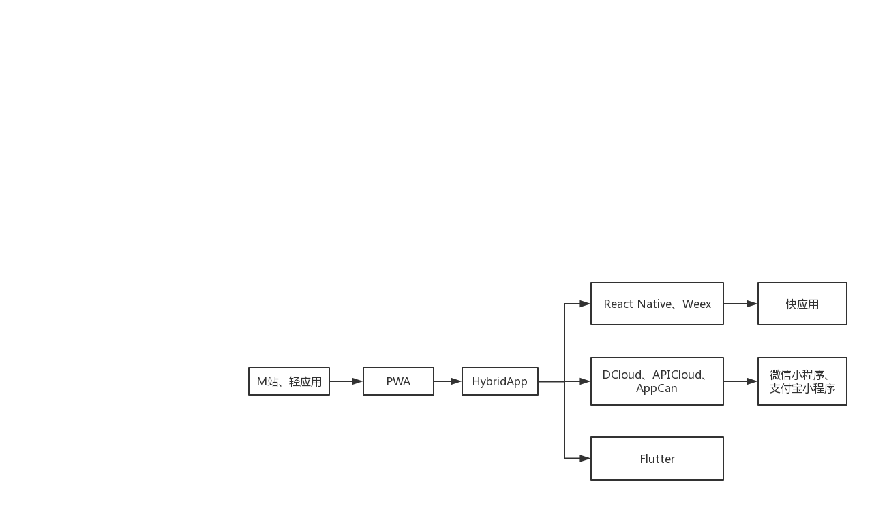
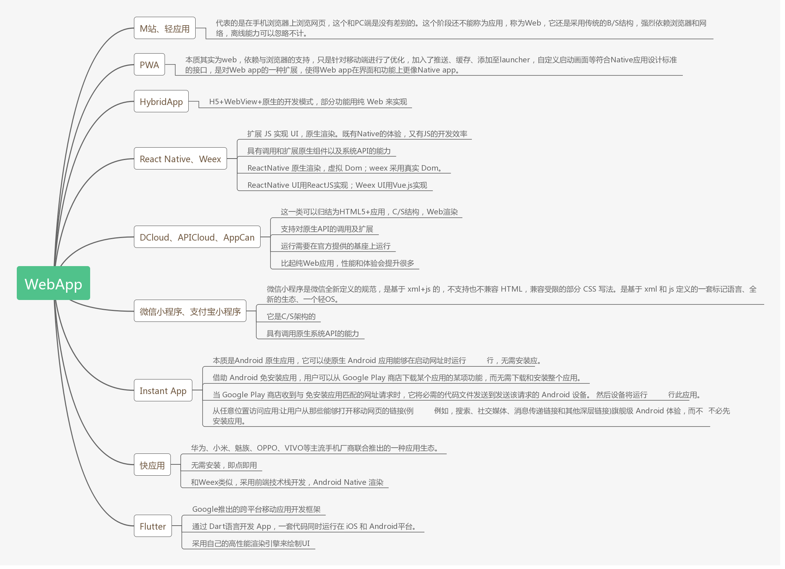

概述
自从Android系统在手机上应用开始，在移动端 Native App 和 Web App之间的战争似乎就没有停止过，Web App 及其各种变体向Native App 发起了无数次的冲锋，但Native App的地位仍然是岿然不动，甚至我们一提起移动互联网，就专指 Native App。这和 PC 端的景象完全不一样。随着轻应用、Hybrid App 、React Native、Weex、微信小程序以及Flutter的出现，我们不得不再一次审视这个问题。
WebApp的特点
WebApp 之所以有资本向 Native App 发起挑战，那么它自身还是有实力的：
- 跨平台：所有系统都能运行，Android、IOS和Web
- 免安装：打开浏览器，就能使用
- 快速部署：升级只需在服务器更新代码
- 超链接：可以与其他网站互连，可以被搜索引擎检索
Web在PC端的这些优点，使得互联网和原生应用分庭抗礼，除了一些工具性的软件，一个浏览器基本可以满足我们的日常需要：购物，娱乐等等。 但是移动互联网毕竟不是PC互联网，它的一些缺点也限制了它的使用。
- 体验差。手机App的操作流畅性，远超网站。
- 业界不支持。所有公司的移动端开发重点，几乎都是原生app。
- 用户不在乎。大多数用户都选择使用手机app，而不是网站。
那么，之所以业界不支持和用户不在乎的原因无非就是性能差，从而造成用户体验差。
WebApp的性能问题
Web app输给Native app的地方，不是界面（UI），而是操作性能。
- Web基于DOM，而DOM很慢。浏览器打开网页时，需要解析文档，在内存中生成DOM结构，如果遇到复杂的文档，这个过程是很慢的。可以想象一下，如果网页上有上万个、甚至几十万个形状（不管是图片或CSS），生成DOM需要多久？更不要提与其中某一个形状互动了。
- DOM拖慢JavaScript。所有的DOM操作都是同步的，会堵塞浏览器。JavaScript 操作 DOM 时，必须等前一个操作结束，才能执行后一个操作。只要一个操作有卡顿，整个网页就会短暂失去响应。浏览器重绘网页的频率是60FPS（即16毫秒/帧），JavaScript 做不到在16毫秒内完成 DOM 操作，因此产生了跳帧。用户体验上的不流畅、不连贯就源于此。
- 虽然现在浏览器也支持多线程，比如JS解析在一个线程，渲染在一个线程，但一般是按照先解析再渲染再执行 JS 这样的顺序执行的。
- 原生渲染直接调用操作系统API，WebView渲染那样需要JavaScript运行环境和CSS渲染器，会有性能损失。
- 在Android早期的版本中，webview的性能很差
上面这些原因，对于PC还不至于造成严重的性能问题，但是手机的硬件资源相对有限，用户互动又相对频繁，结果跟 Native App 一比，就完全落在了下风。
WebApp的优化方向
- 多线程浏览器。每个网页应该由多个线程进行处理，主线程只负责布局和渲染，而且应该在16毫秒内完成。Mozilla 的 Servo 就是这样一个项目，JS解析，页面渲染和JS执行在三个能并发执行的任务中进行。Chrome也支持多线程。
- 多进程浏览器。
- 并发布局。把页面中那些不会影响其它元素属性的独立部分识别出来，让它们与剩余部分并行渲染。
- DOM 的异步操作。JavaScript 对 DOM 的操作不再是同步的，而是触发后，交给Event Loop机制进行监听。
- 非 DOM 方案。浏览器不再将网页处理成 DOM 结构，而是变为其他结构。React 的 Virtual DOM 方案就是这一类的尝试，还有更激进的方案，比如用数据库取代 DOM。
- 采用原生的渲染方案。布局的解析在JS端完成，渲染在Native端完成。
- 优化WebView性能，目前chromium支持硬件渲染。
目前，WebView以及JS引擎的优化日新月异，因此，我们相信可以带动WebApp的崛起。
WebApp的进化史


WebApp的未来
微信小程序，大多数人误解的8个问题 这篇文章写的很好，大家可以阅读一下。
小程序和快应用等形态应该是移动端App的未来，在移动互联网下半场你想打开一个应用，可能就不需要去应用商店下载个App，等下载完安装后使用，只需要打开微信就行了，找到相关应用就可以了。 快应用依据手机OS生态，可以做到与手机系统服务的紧密结合，小程序依据微信生态，但绝不是把微信作为一个入口或者是作为一个应用商店这么简单的事，它的野心是一个OS生态。
参考文档
http://www.ruanyifeng.com/blog/2015/02/future-of-dom.html https://mp.weixin.qq.com/s?__biz=MjM5MDE0Mjc4MA==&mid=2650994254&idx=1&sn=b5a291309cb35e229bdc66052200a39f&chksm=bdbf0e1d8ac8870bd7a6a1b80cd6dbc906251c8b31ea5959419846b312b3b84b8048aa05cc3f&mpshare=1&scene=2&srcid=0928TYbsbovyAI1YJ7aXvfl9&from=timeline&isappinstalled=0&key=9289b6ec21f92a5928c971e763199c62958da88ae7805f55d3594ba99548c4cba2da3c66d7d31038140a81ad4b95694b&ascene=2&uin=MjgyMTI0MDAzMg==&devicetype=android-21&version=26031933&nettype=WIFI&pass_ticket=9nkAV8PvXod8+giTIP0YLiH5aU7EbFOiU8wA5OZrfdzQWSgzai7BiNlh3Ko9rg9y&wx_header=1 http://36kr.com/p/209983.html http://naotu.baidu.com/file/1eb556f3380e8189be859348527ec518?token=a5a049eb4c618e70